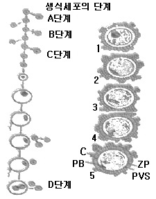
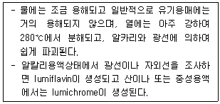
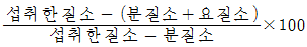
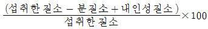
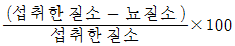
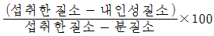
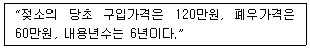
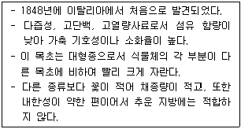

축산산업기사 (2009-05-10 기출문제)
1과목: 가축번식 육종학
1. 일반적으로 돼지의 평균임신기간은?
- 114 ~ 115일
- 154 ~ 155일
- 184 ~ 185일
- 244 ~ 245일
(정답률: 88%)

2. 산란계의 표준난중(標準卵重)은?
- 30~40g
- 40~50g
- 50~60g
- 60~70g
(정답률: 66%)
3. 동결정액 제조시 동해(凍害)로부터 정자를 보호하기 위해 일반적으로 첨가하는 동해방지제는?
- 구연산(Citric acid)
- 글루코오스(Glucose)
- 글리세롤(Glycerol)
- 젤라틴(Gelatin)
(정답률: 81%)
4. 후손을 남기기 위한 종축으로 사용하기 위하여 능력이 우수한 가축을 육종가가 골라내는것은?
- 인위선발
- 자연선발
- 근친교배
- 잡종교배
(정답률: 81%)
5. 다음 중 육우의 경제형질중 유전력이 가장 낮은 항목은?
- 수태율
- 이유시 체중
- 이유 후 일당 증체량
- 사료효율
(정답률: 77%)
6. 암컷의 생식 질병중에서 가장 많이 나타나는 증상은?
- 난소질환
- 나팔관질환
- 자궁질환
- 자궁경관 및 질 질환
(정답률: 78%)
7. 소의 분만 과정 중 태아의 위치가 180° 전환하는 시기는?
- 자궁경관 확장기
- 태아 만출기
- 태아 후산기
- 산욕기
(정답률: 57%)
8. 젖소의 선발된 집단의 평균은 7000kg이고, 모집단의 평균은 5500kg 이면 이 선발된 집단의 선발차는 몇 kg 인가?
- 1500
- 3000
- 5500
- 7000
(정답률: 84%)
9. 바람직한 품종 또는 계통(보통 수컷)을 재래품종 또는 그다지 능력이 우수하지 않은 집단에 수대에 걸쳐서 교배하는 것으로 이미 해당지역에 순화되어 있지만 새삼 그 능력이 열등한 축군(특히 암컷)을 급속하게 개량하여 높은 생산능력을 부여하고 싶은 경우에 유용한 방법은?
- 순종교배
- 계통교배
- 상호역교배
- 누진교배
(정답률: 82%)
10. 암퇘지의 1차 평균 발정주기를 가장 잘 나태낸 것은?
- 8 ~ 10시간
- 12 ~ 15시간
- 18 ~ 23일
- 43 ~ 68일
(정답률: 66%)
11. 자궁수축(진통)을 유기하고, 유선에서 유즙을 배출하게 하는 호르몬은?
- LH
- FSH
- Oxytocin
- TSH
(정답률: 87%)
12. 다음 교배조합 중 순종교배에 해당하는 것은?
- 제주한우(♀) × 앵거스종(♂)
- 캐나다 홀스타인종(♀) × 미국 홀스타인종(♂)
- 헤어포드종(♀) × 샤로레종(♂)
- 쇼트혼종(♀) × 제주한우(♂)
(정답률: 79%)
13. 우리나라에서 비육돈을 생산하기 위한 F1잡종 암퇘지의 생산에 제일 많이 이용되는 어미되지의 품종은?
- Landrace종과 Yorkshire종
- Landrace종과 Duroc종
- Yorkshire종과 Hampshire종
- Yorkshire종과 Duroc종
(정답률: 78%)
14. 닭능력의 개량목적에 따라 채란성과 산육성의 개량이상 형질로 구분할 때 산육능력의 개량에 관련하는 형질인 것은?
- 산란강도
- 취소성
- 체형
- 동기휴산성
(정답률: 68%)
15. 웅성생식기의 분화와 발달물 자극하며 정자형성을 촉진하는 호르몬은?
- 에스트로겐(estrogen)
- 프로게스테론(progesterone)
- 릴랙신(relaxin)
- 테스토스테론(testosterone)
(정답률: 86%)
16. 암닭의 취소성(取笑性)은 어느 호르몬이 의존하는가?
- 에스트로겐(estrogen)
- 옥시토신(oxytocin)
- 프로락틴(prolactin)
- 프로게스테론(progesterone)
(정답률: 57%)
17. 근친 교배의 유전적 효과를 잘못 설명한 것은?
- 이형접합체(異形接合體)의 비율이 증가한다.
- 유전자의 호모(homo)성이 증가된다.
- 각종 열성무해정자의 출현빈도가 높아진다.
- 번식능력, 성장률, 생존율 둥아 악영향을 미친다.
(정답률: 82%)
18. 검정개시일부터 검정종료일까지 총산란수를 검정개시 수수(首數)로 나눈 달걀수로 표시하는 것은?
- 일계산란율
- 산란지속성
- 조숙성
- 산란지수
(정답률: 76%)
19. 다음은 난자의 발달단계를 나타내는 모식도이다. A, B, C, D 단계 중 난낭세포 단계는?

- A
- B
- C
- D
(정답률: 71%)
20. 인공수정을 정액의 희석액 성분 중 정자의 주에너지원으로 사용되는 것은?
- 난황(Egg yolk)
- 탈지분유(Skim Milk)
- 포도당(Glucose)
- 항생물질(Penicillin)
(정답률: 71%)
2과목: 가축사양학
21. 닭에서 펩신, 염산, 점액 등의 분비액을 분비하는 곳으로 단백질 소화 및 용해와 윤활작용을 하는 기관은?
- 소낭
- 선위
- 근위
- 소장
(정답률: 59%)
22. 다음 성명은 비타민 B군 중 무엇인가?

- niacln
- pantothenic acid
- thiamin
- riboflavin
(정답률: 66%)
23. 반추가축의 제 1위내에서 에너지원으로 흡수되는 영양소화 가장 거리가 먼 것은?
- stearic acid
- acetic acid
- butyric acid
- prcpionic acid
(정답률: 67%)
24. 닭의 C/P들에 대한 설명으로 잘못된 것은?
- 닭이 성장함에 따라 C/P율이 커진다.
- 산란율이 높을수록 C/P율이 커진다.
- 단백질 함량이 낮을수록 C/P율이 커진다.
- C/P율은 고정시키고, 칼로리를 높이고자 할 때 단백질 함량도 높여 주어야 한다.
(정답률: 49%)
25. 케톤증(Ketosis)고 과 관련된 설명으로 관련이 없는 것은?
- 아세톤혈증(acetonemia)이라고도 한다.
- 고능력인 젖소에서 분만 후 수일에서 수주일 안에 일어나는 경우가 많다.
- 왼쪽 허구리에 팽만이 일어나고 복통 증세로 인하여 불안, 걱정, 식요절폐, 다리벌림을 나타낸다.
- 대사 장애로 인한 케톤제의 과잉 생산과 저혈당증이 원인이다.
(정답률: 66%)
26. 가축의 영양공급원인 탄수화물의 중요성이 아닌 것은?
- 지방, 단백질의 합성원료로도 쓰인다.
- 뇌와신경조직의 구성성분이다.
- P의 흡수를 돕는다.
- 에너지 공급원이다.
(정답률: 59%)
27. 보통 기상 조건하에서 산란율이 높은 백색 레그혼의 경우 1일 한 마리당 대사에너지의 요구량(Kcal)은? (단, 산란율은 80%, 체중은 1.8kg 이다.)
- 300 ~ 320
- 400 ~ 450
- 600 ~ 620
- 1200 ~ 1250
(정답률: 44%)
28. 단백질(질소)의 질을 측정하는 방법으로서 생물가(生物價)를 사용하는데 다음 중 성장을 위한 생물가 식으로 맞는 것은?




(정답률: 63%)
29. 가금류에 많이 사용하는 성장촉진제로 항생물질과 같이 병아리의 성장과 브로일러의 육질개선, 사료효율, 피부의 착색 및 깃털의 발달에 효과가 있으며, 항생제의 병행사용시 상응작용도 일어나는 것은?
- 생균제
- 효소제
- 황산동
- 유기비소제
(정답률: 64%)
30. 닭(브로일러)에서 필수지방산인 리놀산(Iinoleic acid)의 요구량은 얼마인가? (단, 건물90%를 기준으로 한다.)
- 배합비 중 0.1%
- 배합비 중 0.3%
- 배합비 중 0.5%
- 배합비 중 1%
(정답률: 50%)
31. 박류의 일반적 특징이 아닌 것은?
- 단백질함량이 30~50%로 높다.
- Methionine과 Iysine이 부족하다.
- Ca과 P의 함량이 낮은 편이다.
- 비타민A, D의 함량이 높다.
(정답률: 47%)
32. 소장에서 칼슘, 인의 운반을 촉진하고 골격의 형성에 중요한 역할을 하는 비타민은 무엇인가?
- 비타민 E
- 비타민 C
- 비타민 A
- 비타민 D
(정답률: 77%)
33. NFC사양표준(1994) 백색계통 산란계 사료의 대사에너지는 사료 kg 당 몇 Kcal인가?
- 2400
- 2550
- 2700
- 2900
(정답률: 47%)
34. 사료내 결핍시 육성계에서 뇌연화증(encephalomalacia)이라는 특징적인 결핍증을 일으키는 비타민은?
- Vitamin A
- Vitamin E
- Riboflavin
- Choline
(정답률: 61%)
35. 무기물의 일반적 기능이 아닌 것은?
- 뼈, 치아 및 알껍질 등의 주요구성 성분이며, 특히 골격의 강도를 지배한다.
- 에너지 공급제의 역할을 한다.
- 산, 염기의 평형이 필요하다.
- 신경 및 근육의 기능을 조절한다.
(정답률: 77%)
36. 백색 레그혼 신란계의 적정 산란율을 유지하기 위하여 일일 수당 최대 약 몇 g의 단백질이 필요한가? (단, 체중은 2.0kg, 산란율은 70~80% 이다.)
- 18g
- 26g
- 54g
- 72g
(정답률: 50%)
37. 유지(維持)에필요한 에너지는 다음 중 어느 것에 비례하는가?
- 활동대사에너지
- 가소화에너지
- 체형
- 대사체중
(정답률: 61%)
38. 결핍될 때에 영양실조와 자궁상피세포를 각질화 시킴으로써 불규칙한 성주기와 발정의 중지 등을 야기하는 비타민은?
- 비타민 A
- 비타민 B6
- 비타민 D
- 비타민 K
(정답률: 57%)
39. 분만 직후 갑자기 다량의 착유로 인해 칼슘이 부족하여 발생되는 것은?
- 유두염
- 유두증
- 유방암
- 유열
(정답률: 86%)
40. Gossypol 이라는 유독물질을 함유한 것은?
- 채종박
- 야자박
- 면실박
- 아마인박
(정답률: 75%)
3과목: 축산경영학
41. 한계생산력이 평균생산력 보다 클때의 상태는?
- 평균생산력은 증가한다.
- 평균생산력은 불변이다.
- 평균생산력은 감소한다.
- 평균생산력은 최대가 된다.
(정답률: 72%)
42. 다음 축산경영에서의 공동조직화의 원칙이 아닌 것은?
- 인화의 원칙
- 이윤극대화의 원칙
- 공평의 원칙
- 민주화의 원칙
(정답률: 52%)
43. 축산경영에서 상품생산화가 진행됨에 따라 경영의 전문화와 기업화도 진행된다. 공업부문과 비교할 때 옳지 않은 것은?
- 전문화와 기업화 과정은 공업부문과 동일하다.
- 축산업에서는 하나의 품목을 생산할 때 각 부문이 분리되어 있지 않다.
- 상업적 축산업의 형태는 다양하다.
- 축산업의 전문화 수준은 상품생산부문이 경영 내에서 100% 또는 그에 가까운 수준까지 운영된다고 단정할 수 없다.
(정답률: 51%)
44. “Corn-hog cycle" 을 가장 잘 설명한 것은?
- 곡물가격이 상승하면 가축가격은 상승하고, 곡물가격이 하락시는 가축가격도 하락한다.
- 곡물가격이 상승하면 가축가격은 하락하고, 곡물가격이 하락시는 가축가격은 상승한다.
- 공산물 가격이 상승하면 농산물가격도 상승하고, 공산물 가격이 하락하면 농산물 가격도 하락한다.
- 공산물 가격이 상승하면 농산물가격은 하락하고, 공산물 가격이 하락하면 농산물가격도 상승한다.
(정답률: 71%)
45. 다음 중 유지율을 올바르게 나타낸 것은?
- 유지방량 / 총유량
- 구입사료비 / 우유판매액
- 경산우1두당 1일산유량 / 300일
- 연간 우유생산량 / 경산우 연평균두수
(정답률: 68%)
46. 축산경영관리의 문제점으로 적절하지 못한 것은?
- 노동절약적 시설·기계에대한 투자경향이 강하게 나타난다.
- 축산물 가격변동이 심하지 않으므로 판매가격은 경영계획시의 가격에 기준 한다.
- 자기자본이 충실하지 못한 채 코드를 확장하는 경향이 있다.
- 사료비의 비중이 높고 생산성이 생산비를 크게 좌우한다.
(정답률: 74%)
47. 토지의 매매가격에 의한 평가액을 바르게 표시한 것은?
- 매개 등기부상의 가격을 말한다.
- 실제 매매가격을 말한다.
- 소유권등기 이전까지의 매매가격과 비용의 합계를 말한다.
- 소유권등기를 마칠 때까지의 매매가격과 비용의 합계를 말한다.
(정답률: 67%)
48. 축산경영에서는 토지면적보다는 가축수에 따라서 그 규모가 결정되는 것이 일반적이다. 이는 축산경영의 어떠한 특징을 설명한 것인가?
- 2차 생산의 성격
- 간접적 토지관계
- 물량감소와 가치증대의 성격
- 생산물의 저장 증진
(정답률: 82%)
49. 축산 소득율을 바르게 표현한 것은?
- (축산경영비/축산소득)×100
- (축산소득/축산조수입)×100
- (축산소득/자기자본액)×100
- (자기자본액/축산소득)×100
(정답률: 73%)
50. 축산경영규모와 관련된 설명으로 부적합한 것은?
- 축산도 토지이용을 바탕으로 성립되는 산업이므로 축산경영규모도 반드시 토지면적의 크기로 파악되어야 한다.
- 축산의 경영규모는 축산경영 조직체의 크기로 정의할 수 있다.
- 경영의 적정규모는 기본적으로 적정자본을 투입하여 단위당 최소비용으로 최대의 이익을 획득할 수 있는 경영 조건에 있는 규모이다.
- 가축사육규모의 증대는 경영의 전문화를 제고시켜 분업이나 협업이 이루어지기 쉽게 한다.
(정답률: 76%)
51. 비용에 대한 설명 중 틀린 것은?
- 고정비는 단기적으로 볼때 생산량이 변화하면 변하는 비용이다.
- 유동비는 생산물 산출량과 직접 관계되는 비용이다.
- 단기분석에 있어서 총비용은 총고정비와 총유동비의 합계이다.
- 평균비용은 총고정비용을 산출량으로 나눈 비용이다.
(정답률: 73%)
52. 낙농경영의 진단지표가 아닌 것은?
- 두당 생산량
- 농후사료와 조사료의 비율
- 관리원인
- 질병발생률
(정답률: 68%)
53. 축산경영 요소의 하나인 토지의 경제력 성질은 그 성질상 다른 자본재와는 몇 가지의 특이한 성질이 있는데 이에 해당되지 않는 것은?
- 불가증성
- 불가동성
- 불소모성
- 불항구성
(정답률: 75%)
54. 어느 비육우사육농가의 두달 조수입이 2,000,000원, 경영비가 1,000,000원, 감가상각비가 300,000원, 자기노력비가 500,000원일 때, 두당 소득은 얼마인가?
- 1,000,000원
- 700,000원
- 500,000원
- 200,000원
(정답률: 53%)
55. 다음 생산비 중에서 변동비인 것은?
- 지대
- 조세공과
- 생산사료비
- 감가상각비
(정답률: 77%)
56. 다음의 경우 정액법에 의한 감가상각비는 얼마인가?

- 10만원
- 15만원
- 20만원
- 30만원
(정답률: 80%)
57. 어느 낙농경영농가에서 농후사료 급여량이 100단위일 때, 총 우유 생산량이 400단위라면 평균생산은 얼마인가?
- 2
- 3
- 4
- 5
(정답률: 79%)
58. 우유생산물 목적으로 하는 낙농가에서 송아지를 생산한 경우 송아지에 대한 적합한 자본재 평가방법은?
- 시가평가법
- 수익가평가법
- 기회비용평가법
- 취득원가평가법
(정답률: 63%)
59. 다음 중 낙농경영의 조수익에 영향을 미치지 않는 것은?
- 우유판매액
- 송아지판매액
- 육성우사료비
- 육성우판매수익
(정답률: 58%)
60. 다음 고정자본재 중 감가상각비를 계산하지 않은 항목은?
- 축사
- 착유기
- 경운기
- 토지
(정답률: 80%)
4과목: 사료작물학
61. 건초보다 사빌리지에 함량이 낮은 비타민은?
- 비타민 A
- 비타민 B
- 비타민 C
- 비타민 D
(정답률: 84%)
62. 목방형 목초(오차드그리스, 페레니얼라이그리스)의 생육적온 범위로 가장 적합한 것은?
- 5 ~ 10℃
- 10 ~ 15℃
- 15 ~ 21℃
- 25 ~ 30℃
(정답률: 77%)
63. 다음 중 화본과 목초에 해당하는 것은?
- 레드클로버
- 레드톱
- 알팔파
- 버즈 풋 트레포일
(정답률: 50%)
64. 답리작 사료작물이 구비해야 할 재배조건이 아닌 것은?
- 생육기간이 짧은 것
- 벼의 생상력을 감퇴시키지 않을 것
- 내한성이 강한 것
- 난지형으로 내습성이 강한 것
(정답률: 45%)
65. 건초의 품질을 평가하는데 있어 중요도가 가장 낮은 것은?
- 잎 비율
- 녹색율
- 잡초의 혼합율
- 발효 비율
(정답률: 68%)
66. 경질 전분함량이 낮고 과피가 두꺼워 식용에는 적합하지 않지만 수량성이 가장 높아 사일리지용으로 재배되는 옥수수 종류는?
- 폭립종
- 마치종
- 강립종
- 나종
(정답률: 78%)
67. 알팔파의 사료가치에 대한 설명으로 옳지 않은 것은?
- 단백질함량이 많다.
- 지방함량이 많다.
- 가축의 기호성이 높다.
- 무기물의 함량이 많다.
(정답률: 78%)
68. 방목방법 중 초지이용률을 가장 향상시키고, 주로 집약적인 젖소방목이 많이 쓰이는 것은?
- 대상방목법
- 계목법
- 윤환방목법
- 연속방목법
(정답률: 69%)
69. 다음 목초 중 하번초에 해당하는 것은?
- 오차드그라스
- 켄터기블루그라스
- 이탈리안라이그리스
- 톨페스큐
(정답률: 60%)
70. 콩과목초에 있어서 1번초로 건초를 만들 때 가장 적절한 예취 시기는?
- 영양생장기
- 결실기
- 개화초기
- 꽃봉오리 출현기
(정답률: 87%)
71. 사초는 생존연한에 따라 다년성, 2년생, 월년생, 1년생으로 구분된다. 다음 중 1년생 사료작물에 해당하는 것은?
- 페레니얼라이그라스
- 리드카나리그라스
- 수단그리스
- 티모시
(정답률: 76%)
72. 옥수수 수확 후작으로 적합한 유채의 파종 적기는?
- 6월 상순
- 8월 상순
- 9월 상순
- 11월 상순
(정답률: 72%)
73. 청산의 배당체를 함유하여 중독을 일으키는 사료작물은?
- 오차드그라스
- 수단그라스계 잡종
- 톨페스큐
- 페레니얼라이그라스
(정답률: 82%)
74. 우리나라 대부분의 개량된 벼과(화본과) 목초에 적합한 토앙산도 범위는?
- pH 8.0 ~ 9.0
- pH 7.5 ~ 8.0
- pH 5.5 ~ 6.5
- pH 4.5 ~ 5.5
(정답률: 57%)
75. 화본과 사료작물 보다 두과사료 작물에 더 많이 함유되어 있는 조성분은?
- 조단백질
- 조지방
- 조섬유
- 조회분
(정답률: 77%)
76. 북방형 목초의 채초 이용시 초지관리에 대한 설명으로 올바른 것은?
- 화본과 독초의 예취 높이는 대략 5cm 정도이다.
- 하고기(夏枯期)에 목초의 2차 예취는 장마가 지난 후에 실시하는 것이 좋다.
- 최종 예취 적기는 일평균기온이 섭씨10℃ 되는 날로부터 40일전 정도가 된다.
- 연간 적정 예취회수는 2회일 때 생산량이 가장 높다.
(정답률: 40%)
77. 중부지방에서의 수단그라스의 파종 적기는?
- 3월중순 - 3월하순
- 4월상순 - 4월중순
- 4월하순 - 5월상순
- 5월하순 - 6월상순
(정답률: 63%)
78. 옥수수를 유선 1/2 ~ 2/3시기에 수확하여 벙커 사일로에서 시일리지를 제조하고자 할 때 가장 적당한 수분함량은? (단, 세절 길이는 3/8 ~ 1/2cm로 한다.)
- 40 ~ 50%
- 55 ~ 60%
- 67 ~ 72%
- 75% 이상
(정답률: 78%)
79. 다음 설명하고 있는 식물은?

- 알사이크클로버
- 레드클로버
- 라디노클로버
- 스무드브롬그라스
(정답률: 52%)
80. 건초제조 중의 양분손실 조건에 해당하지 않는 것은?
- 잎의 탈락에 의한 손실
- 강우에 의한 용탈 손실
- 식물의 호흡에 의한 손실
- 예취시기에 의한 손실
(정답률: 57%)